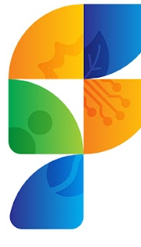

Redesign completo da plataforma de gestão georreferenciada de ordens de serviço, fiscalizações e chamados. Protótipos interativos — desktop e mobile — prontos para explorar.
Dica: no app de campo, toque no selo Online/Offline no topo para simular a perda de conexão e ver a produtividade offline. Na CCO, use o seletor Mapa / Satélite sobre o mapa e o botão Guia (ou tecla ?) para o manual em tempo real.